library(ggplot2)
library(tibble)
# devtools::install_github("debruine/faux")
library(faux)
source("code/theme_gar.txt")
source("code/Rallfun-v35-light.txt")
source("code/summarySE.txt") # Define summary function
# Code from:
# http://www.cookbook-r.com/Graphs/Plotting_means_and_error_bars_(ggplot2)/
library(plyr)
library(cowplot)7 Perspectives on group comparisons
7.1 Chapter preparation
In this chapter, we need a few different datasets and source files, so we will introduce them as we need them.
7.1.1 Organising your files and project for the chapter
Before we can get started, you need to organise your files and project for the chapter, so your working directory is in order.
In your folder for statistics and research design
Stats_Research_Design, create a new folder called08_group_comparisons.We are working with a few data sets and source files in this chapter, so please save the following zip file containing all the files you need: Chapter 07 Files. These are all the same as Chapter 7, so you can copy and paste it from your previous chapter if you already have them saved. Right click the link and select “save link as”, or clicking the link will save the file to your Downloads. Extra the files and save the two folders (
dataandcode) in your08_group_comparisonsfolder. All the code in this chapter assumes these two folders with all their files inside are in the same folder as your Quarto document.Create an R Project for
08_group_comparisonsas an existing directory for your chapter folder. This should now be your working directory.Create a new Quarto document and give it a sensible title describing the chapter, such as
08 Perspectives on Group Comparisons. Save the file in your08_group_comparisonsfolder.
You are now ready to start working on the chapter!
7.2 Dependencies
7.3 Example: within x between design
The example is from a 2016 editorial published in the European Journal of Neuroscience.
7.3.1 Load data
7.3.2 Bar graph
Making a bar graph in ggplot2 is actually harder than making a more informative alternative.
datas <- summarySE(data, measurevar="value", groupvars=c("group","condition"))
bargraph <- ggplot(datas, aes(x=group, y=value, fill=condition)) +
theme_linedraw() +
geom_bar(position=position_dodge(), stat="identity", colour="black") +
geom_errorbar(aes(ymin=value-se, ymax=value+se),
width=.2, # Width of the error bars
position=position_dodge(.9)) +
scale_fill_manual(values = c("#E69F00", "#56B4E9")) +
theme(axis.text.x = element_text(colour="grey20",size=16),
axis.text.y = element_text(colour="grey20",size=16),
axis.title.x = element_blank(),
axis.title.y = element_blank(),
legend.title = element_blank(),
legend.text = element_text(colour="grey20",size=16),
legend.key = element_rect(colour = "black",linewidth=.1),
legend.position.inside = c(.15, .90),
plot.margin = unit(c(5.5,5.5,5.5,5.5), "pt"),
plot.title = element_text(colour="grey20",size=20)) +
labs(title="Mean +/- SEM") +
scale_y_continuous(limits=c(0, 15),breaks=seq(0,15,5)) +
guides(fill = guide_legend(position = "inside"))
bargraph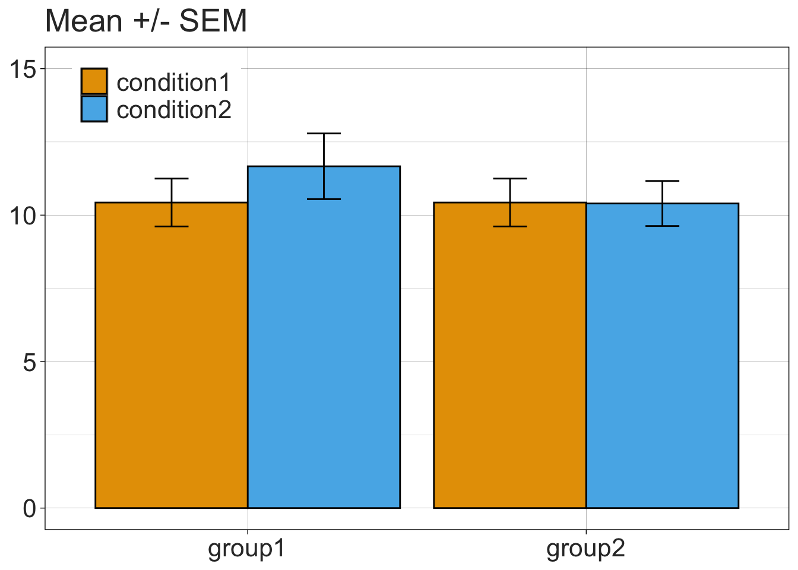
7.3.3 1D scatterplots = stripcharts of differences
value <- data$value[data$condition=="condition2"]-data$value[data$condition=="condition1"]
participant <- data$participant[data$condition=="condition2"]
group <- data$group[data$condition=="condition2"]
diff <- data.frame(participant,group,value)
set.seed(8)
diffstrip <- ggplot(diff, aes(x=group, y=value, fill=group, colour=group, shape=group)) + theme_linedraw() +
geom_abline(intercept = 0, slope = 0) +
geom_jitter(position=position_jitter(0.1), size=4, stroke=1, alpha=0.9) +
scale_shape_manual(values=c(22,21)) +
scale_fill_manual(values = c("grey70", "grey95")) +
scale_colour_manual(values = c("grey5","grey5")) +
theme(legend.position="none",
axis.text.x = element_text(colour="grey20",size=16),
axis.text.y = element_text(colour="grey20",size=16),
axis.title.x = element_blank(),
axis.title.y = element_blank(),
plot.title = element_text(colour="grey20",size=20),
plot.margin = unit(c(5.5,5.5,5.5,5.5), "pt")) +
# plot.margin = unit(c(150,200,5.5,5.5), "pt")
labs(title="Differences: condition 2 - condition 1") +
scale_y_continuous(limits=c(-2.5, 3.5),breaks=seq(-2,3,1))
diffstrip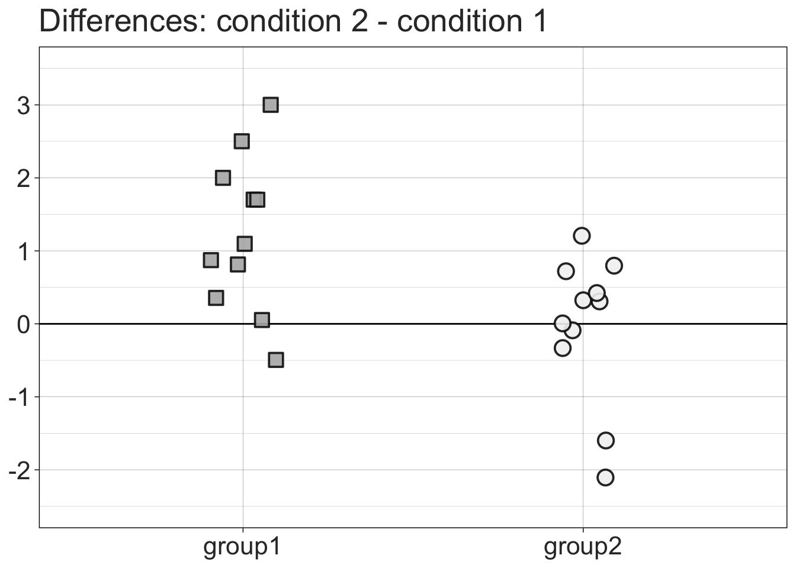
7.3.4 Stripchart + linked observations
p <- ggplot(data, aes(x=condition, y=value, fill=condition, group=participant,shape=group)) + theme_linedraw() +
geom_line(linewidth=1, alpha=1) +
geom_point(colour = "black", size = 4, stroke = 1) +
scale_shape_manual(values=c(22,21)) +
scale_fill_manual(values = c("#E69F00", "#56B4E9")) +
theme(axis.text.x = element_text(colour="grey20",size=16),
axis.text.y = element_text(colour="grey20",size=16),
axis.title.x = element_blank(),
axis.title.y = element_blank(),
plot.title = element_text(colour="grey20",size=20),
legend.position="none",
# plot.margin = unit(c(150,100,5.5,5.5), "pt")
plot.margin = unit(c(5.5,5.5,5.5,5.5), "pt")) +
labs(title="Paired observations") +
scale_y_continuous(limits=c(0, 20),breaks=seq(0,20,5))
# p
linkedstrip <- p + facet_grid(. ~ group) +
theme(strip.text.x = element_text(size = 20, colour = "white"),
strip.background = element_rect(colour="darkgrey", fill="darkgrey"))
linkedstrip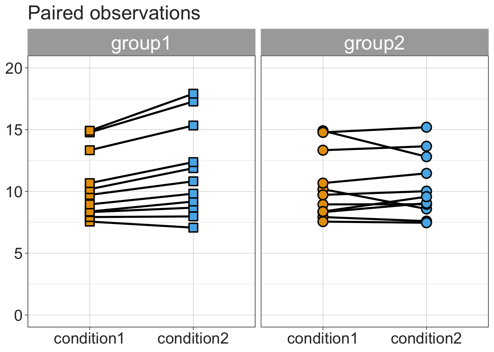
7.3.5 Scatterplot of paired observations
condition1 <- data$value[data$condition=="condition1"]
condition2 <- data$value[data$condition=="condition2"]
participant <- data$participant[data$condition=="condition2"]
group <- data$group[data$condition=="condition2"]
rdata <- data.frame(participant,group,condition1,condition2)
scatterdiff <- ggplot(rdata, aes(x=condition1, y=condition2, group=group, fill=group, colour=group,shape=group)) +
geom_abline(intercept = 0) +
geom_point(size=4,stroke=1, alpha = 0.9) +
theme_linedraw() +
scale_shape_manual(values=c(22,21)) +
scale_fill_manual(values = c("grey70", "grey95")) +
scale_colour_manual(values = c("grey5","grey5")) +
guides(colour = guide_legend(position = "inside")) +
theme(axis.text.x = element_text(colour="grey20",size=16),
axis.text.y = element_text(colour="grey20",size=16),
axis.title.x = element_text(colour="grey20",size=18),
axis.title.y = element_text(colour="grey20",size=18),
legend.key.width = unit(1.5,"cm"),
legend.text = element_text(colour="grey20",size=16),
legend.title = element_blank(),
legend.position = c(.15, .85),
plot.margin = unit(c(5.5,5.5,5.5,5.5), "pt"),
plot.title = element_text(colour="grey20",size=20)) +
labs(title="Paired observations") +
scale_x_continuous(limits=c(6, 16),breaks=seq(6,16,2)) +
scale_y_continuous(limits=c(6, 19),breaks=seq(6,19,2))Warning: A numeric `legend.position` argument in `theme()` was deprecated in ggplot2
3.5.0.
ℹ Please use the `legend.position.inside` argument of `theme()` instead.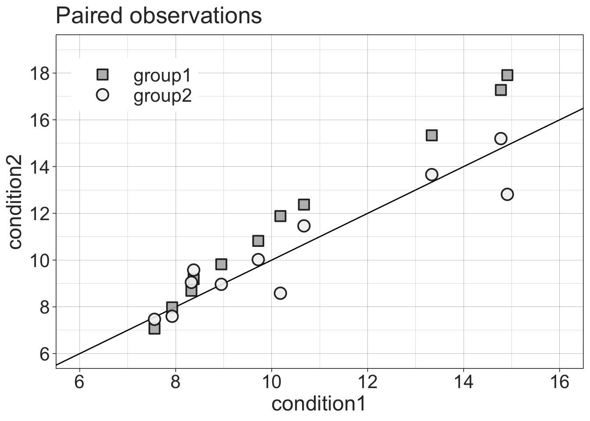
7.4 Examples of standard group statistics
Stats results as reported in the EJN editorial.
7.4.1 2 x 2 ANOVA
aov_gp_cond <- aov(value ~ group*condition + Error(participant/condition), data=data)
summary(aov_gp_cond)
Error: participant
Df Sum Sq Mean Sq F value Pr(>F)
group 1 4.4 4.43 0.261 0.615
Residuals 20 339.6 16.98
Error: participant:condition
Df Sum Sq Mean Sq F value Pr(>F)
condition 1 3.986 3.986 7.509 0.01261 *
group:condition 1 4.430 4.430 8.345 0.00908 **
Residuals 20 10.617 0.531
---
Signif. codes: 0 '***' 0.001 '**' 0.01 '*' 0.05 '.' 0.1 ' ' 17.4.2 Group 1 t-test
x <- data[data$group=="group1" & data$condition=="condition1" ,"value"]
y <- data[data$group=="group1" & data$condition=="condition2" ,"value"]
t.test(x, y, paired=T)
Paired t-test
data: x and y
t = -3.8742, df = 10, p-value = 0.003088
alternative hypothesis: true mean difference is not equal to 0
95 percent confidence interval:
-1.9477091 -0.5253818
sample estimates:
mean difference
-1.236545 7.4.3 Group 2 t-test
x <- data[data$group=="group2" & data$condition=="condition1" ,"value"]
y <- data[data$group=="group2" & data$condition=="condition2" ,"value"]
t.test(x,y,paired=T)
Paired t-test
data: x and y
t = 0.1081, df = 10, p-value = 0.9161
alternative hypothesis: true mean difference is not equal to 0
95 percent confidence interval:
-0.6400830 0.7053557
sample estimates:
mean difference
0.03263636 7.4.4 Make final figure combining 4 panels
7.5 Inferences for all pairwise differences
One way to illustrate the 2x2 interaction is to plot the distribution of all pairwise differences, between the two independent groups, of the condition differences. Indeed, an interaction is a difference of differences.
g1diff <- data[data$group=="group1" & data$condition=="condition2" ,"value"] - data[data$group=="group1" & data$condition=="condition1" ,"value"]
g2diff <- data[data$group=="group2" & data$condition=="condition2" ,"value"] - data[data$group=="group2" & data$condition=="condition1" ,"value"]
apd <- as.vector(outer(g1diff, g2diff, FUN="-")) # all pairwise differences
df <- tibble(x = apd)
ggplot(df, aes(x = x)) +
theme_gar +
geom_density(alpha = 1 , fill = "grey95", colour = "black") +
geom_vline(xintercept = 0, linetype = "dashed") + # zero reference line
geom_vline(xintercept = median(apd)) + # median difference
theme(legend.position="none",
axis.text = element_text(size=14),
axis.title = element_text(size=16,face="bold"),
axis.ticks.y = element_blank(),
axis.text.y = element_blank()) +
coord_cartesian(xlim = c(-3, 6)) +
ylab("Density") +
xlab("All pairwise differences of condition 2 minus condition 1") +
ggtitle(paste0("Median = ", median(apd), ", P(X>Y) = ", round(100*mean(apd>0), digits=1), "%"))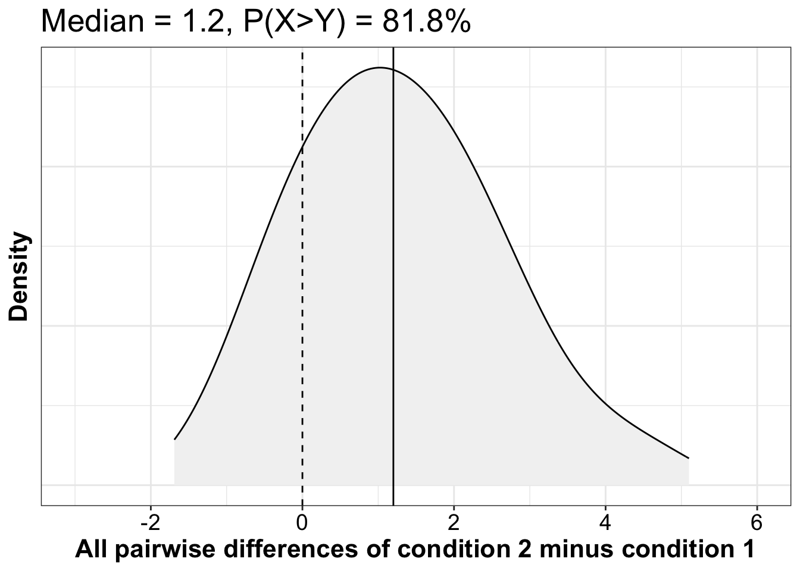
7.5.1 More details about inferences on all pairwise differences
7.5.1.1 Compute
7.5.1.2 All pairwise differences: implementation
7.5.1.3 Median of all pairwise differences
For a measure of effect size preserving the original units, we could report the median of all pairwise differences and its percentile bootstrap confidence interval:
Median of all pairwise differences = 1.2 [0.347, 2.092], P=0.003.
This measure answer the questions: what is the typical difference between two observations selected at random from the two groups?
7.5.1.4 Plot bootstrap distribution
Here we calculate and plot the bootstrap distribution of the medians of all pairwise differences between the two independent groups. The results should be very similar to the ones from the wmwpb function we used in the previous chunk.
set.seed(1)
nboot <- 2000
aav <- 0.05 # arbitrary alpha value
n1 <- length(g1diff)
n2 <- length(g2diff)
# bootstrap sampling independently from each group
boot.diff <- vector(mode = "numeric", length = nboot)
for(B in 1:nboot){
boot.diff[B] <- median(outer(sample(g1diff, size=n1, replace=TRUE),sample(g2diff, size=n2, replace=TRUE),FUN="-"))
}
ci <- quantile(boot.diff, probs = c(aav/2, 1-aav/2))
df <- as_tibble(with(density(boot.diff),data.frame(x,y)))
ggplot(df, aes(x = x, y = y)) + theme_gar +
geom_vline(xintercept = median(apd), colour = "grey", linewidth = 1) +
geom_line(linewidth = 2) +
labs(x = "Bootstrap medians of all pairwise differences", y = "Density") +
# confidence interval ----------------------
geom_segment(x = ci[1], xend = ci[2],
y = 0, yend = 0,
lineend = "round", size = 3, colour = "orange") +
annotate(geom = "label", x = ci[1]+0.15, y = 0.1*max(df$y), size = 7,
colour = "white", fill = "orange", fontface = "bold",
label = paste("L = ", round(ci[1], digits = 2))) +
annotate(geom = "label", x = ci[2]-0.15, y = 0.1*max(df$y), size = 7,
colour = "white", fill = "orange", fontface = "bold",
label = paste("U = ", round(ci[2], digits = 2)))Warning: Using `size` aesthetic for lines was deprecated in ggplot2 3.4.0.
ℹ Please use `linewidth` instead.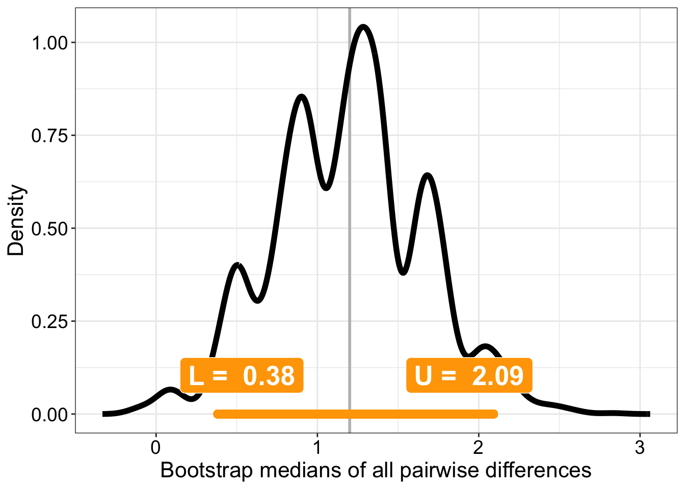
7.5.1.5 \(P(X>Y)\)
Given two observations selected at random from these two groups, what is the probability that an observation from group 1 will be larger than one in group 2?
Using the cid() function:
cid() also returns the complementary probability \(P(X<Y)\) and the robust ordinal measure of effect size known as Cliff’s delta: \(d = P(X>Y) - P(X<Y)\).
Make our own function to compute the probability that X is greater than Y:
Use it:
7.5.1.6 Confidence interval
7.5.1.7 Plot bootstrap distribution
diff <- pxgy(g1diff, g2diff) # group difference
ci <- quantile(b.res, probs = c(0.025, 0.975))
ci1 <- ci[1]
ci2 <- ci[2]
df <- as_tibble(with(density(b.res, to = 1),data.frame(x,y)))
# in the lecture, the graph I presented was generated by using this line of code:
# df <- as_tibble(with(density(b.res),data.frame(x,y)))
# How do the graphs differ?
# check the help for the density function.
ggplot(df, aes(x = x, y = y)) + theme_gar +
geom_vline(xintercept = diff, colour = "grey", size = 1) +
geom_line(size = 2) +
scale_x_continuous(breaks = seq(0, 1, 0.1)) +
coord_cartesian(xlim = c(0, 1.05)) +
labs(x = "Bootstrap P(X>Y)", y = "Density") +
# confidence interval ----------------------
geom_segment(x = ci[1], xend = ci[2],
y = 0, yend = 0,
lineend = "round", size = 3, colour = "orange") +
annotate(geom = "label", x = ci1+0.015, y = 0.1*max(df$y), size = 7,
colour = "white", fill = "orange", fontface = "bold",
label = paste("L = ", round(ci1, digits = 2))) +
annotate(geom = "label", x = ci2-0.015, y = 0.1*max(df$y), size = 7,
colour = "white", fill = "orange", fontface = "bold",
label = paste("U = ", round(ci2, digits = 2))) +
theme(axis.text.y = element_blank(),
axis.ticks.y = element_blank())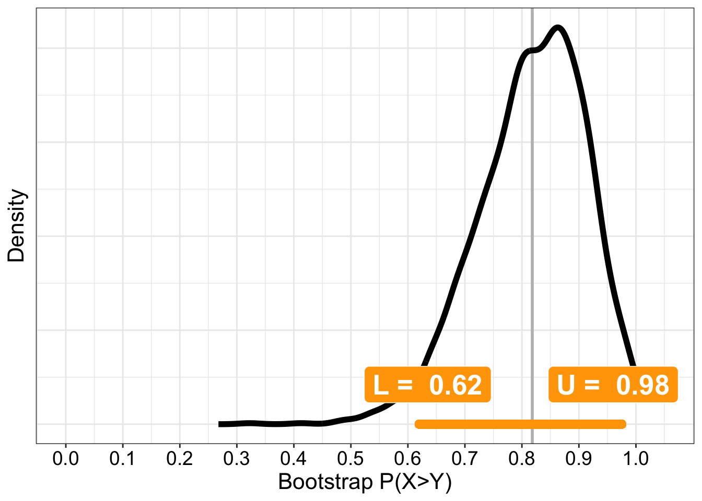
7.6 Two dependent groups: learning experiment
Here are two vectors of paired scores from a cognitive test in two sessions. We are interested in learning effects between sessions.
7.6.1 Simulate data from n participants
We use the faux package from Lisa Debruine to do that.
set.seed(7)
n <- 100 # number of participants
df1 <- rmulti(n = n,
dist = c(session1 = "beta",
session2 = "beta"),
params = list(session1 = c(shape1=3, shape2=1),
session2 = c(shape1=5, shape2=1)),
r = 0.7)
ggplot(df1, aes(x=session1,y=session2)) + theme_gar +
geom_abline(intercept = 0, slope = 1) +
geom_point() +
geom_smooth() +
coord_cartesian(xlim = c(0,1), ylim = c(0,1))`geom_smooth()` using method = 'loess' and formula = 'y ~ x'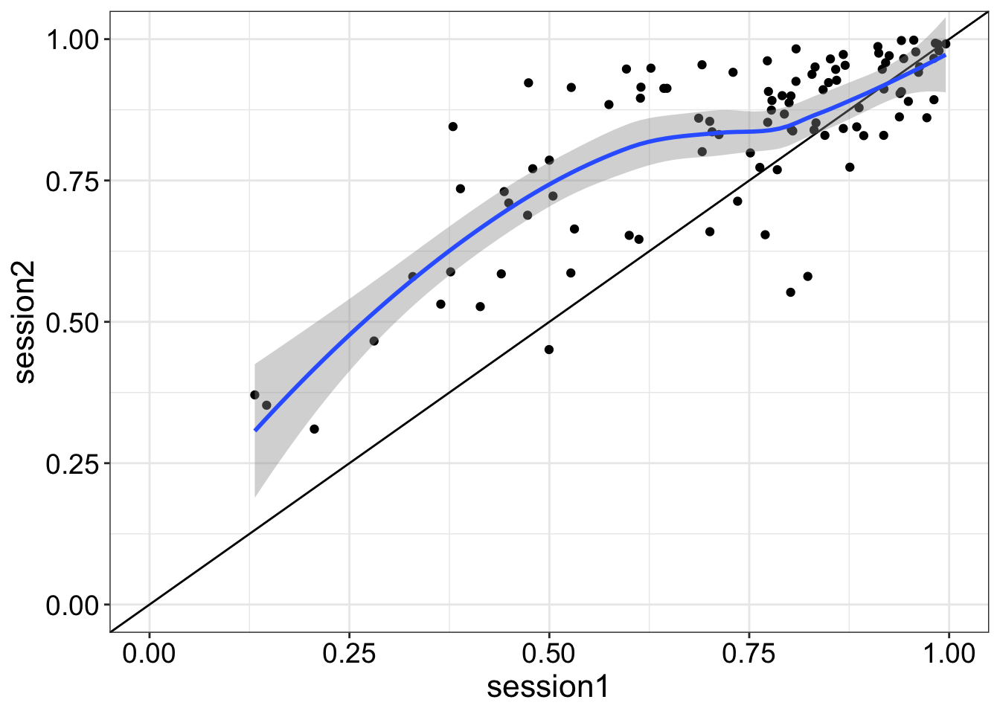
7.6.2 Illustrate results
7.6.2.1 Make data frame
Reformat data frame.
7.6.2.2 Independent stripcharts (1D scatterplots)
set.seed(44) # reproducible jitter
ggplot(df2, aes(x = group,
y = score,
fill = group)) +
geom_jitter(alpha = 0.7,
shape = 21,
size = 4,
width = .15) +
scale_fill_manual(values=c("#E69F00", "#56B4E9")) +
theme_linedraw() +
theme(legend.position = "none") +
theme(axis.title.y = element_text(size=16,face="bold"),
axis.title.x = element_blank(),
axis.text = element_text(size=14)) +
ylab("Score") +
scale_y_continuous(limits = c(0, 1))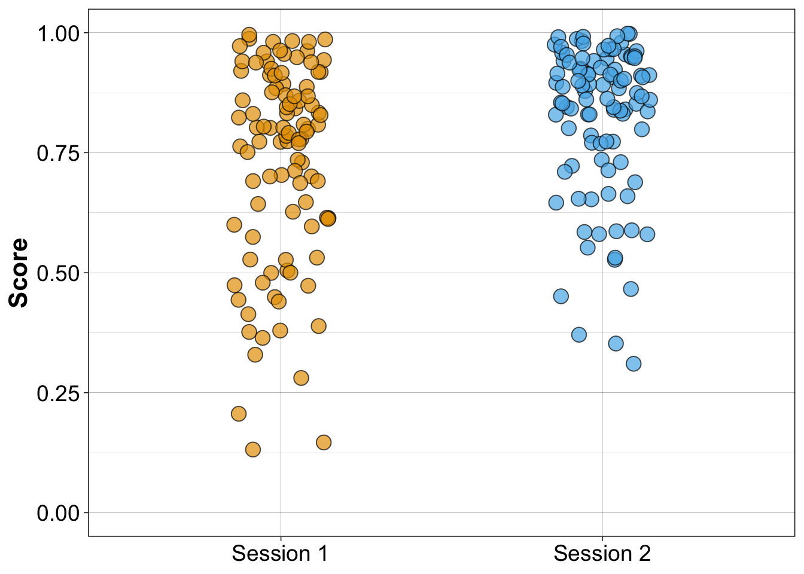
7.6.2.3 Stripcharts with medians
set.seed(44) # reproducible jitter
# compute medians
md1 <- median(df1$session1)
md2 <- median(df1$session2)
ggplot(df2, aes(x = group,
y = score,
fill = group)) +
geom_jitter(alpha = 0.7,
shape = 21,
size = 4,
width = .15) +
scale_fill_manual(values=c("#E69F00", "#56B4E9")) +
theme_linedraw() +
theme(legend.position = "none") +
theme(axis.title.y = element_text(size=16,face="bold"),
axis.title.x = element_blank(),
axis.text = element_text(size=14)) +
ylab("Scores") +
scale_y_continuous(limits = c(0, 1)) +
# add median for session 1
geom_segment(aes(x = 0.75, y = md1, xend = 1.25, yend = md1), size = 1, colour = "black") +
# add median for session 2
geom_segment(aes(x = 1.75, y = md2, xend = 2.25, yend = md2), size = 1, colour = "black")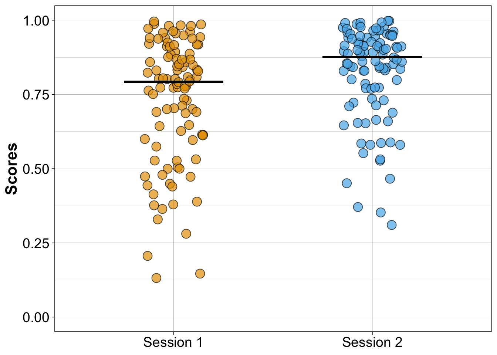
7.6.2.4 Linked stripcharts
New illustration in which coloured lines link paired observations.
set.seed(44) # reproducible jitter
pd <- position_dodge(width = 0.1)
ggplot(df2, aes(x=group, y=score, group=participant)) + theme_linedraw() +
geom_line(aes(colour=participant),size=1, alpha=.9,
position=pd) +
scale_colour_viridis_c(option = "A") +
theme(axis.text = element_text(size=14),
axis.title.x = element_blank(),
axis.title.y = element_text(size=16,face="bold"),
legend.position="none") +
scale_y_continuous(limits=c(0, 1)) +
ylab("Scores")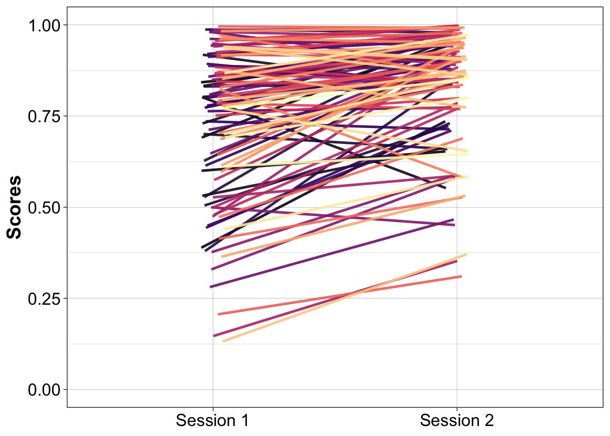
7.6.3 1D scatterplot = stripchart of differences
set.seed(44) # reproducible jitter
df.diff <- tibble(participant = 1:n,
difference = df1$session2 - df1$session1,
gr = rep("gr", n))
ggplot(df.diff, aes(x=gr, y=difference)) + theme_gar +
geom_abline(intercept = 0, slope = 0, linetype = 2) + # zero reference line
geom_jitter(alpha = 0.7,
shape = 21,
size = 2,
width = .15,
colour = "grey10",
fill = "grey90") +
theme(legend.position="none",
axis.ticks.x = element_line(colour="white"),
axis.text.x = element_text(size=14,colour="white"),
axis.text.y = element_text(size=14),
axis.title.x = element_text(size=16,face="bold",colour="white"),
axis.title.y = element_text(size=16,face="bold"),
plot.title = element_text(colour="black",size=20),
panel.grid.major.x = element_blank(),
panel.grid.minor.x = element_blank()) +
ylab("Differences") +
# scale_y_continuous(limits=c(-0.6, 0.6), breaks=seq(-0.6, 0.6, 0.1)) +
stat_summary(fun = median, fun.min = median, fun.max = median,
geom = "crossbar", width = 0.5)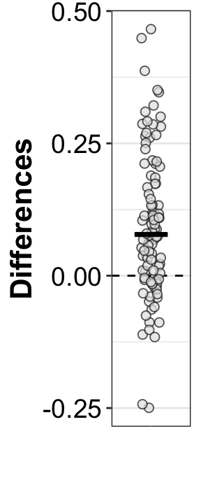
7.6.3.1 Scatterplot of paired observations
ggplot(df1, aes(x = session1, y = session2)) + theme_linedraw() +
geom_point(alpha = 0.7,
shape = 21,
size = 4,
colour = "grey10",
fill = "grey90") +
geom_smooth() +
geom_abline(intercept = 0,
slope = 1,
linetype = "longdash") + # slope 1 reference line
theme(axis.title = element_text(size=16,face="bold"),
axis.text = element_text(size=14)) +
xlab("Session 1") +
ylab("Session 2") +
scale_x_continuous(breaks = seq(0, 1, .1)) +
theme(plot.title = element_blank()) +
coord_cartesian(xlim = c(0, 1), ylim = c(0, 1))`geom_smooth()` using method = 'loess' and formula = 'y ~ x'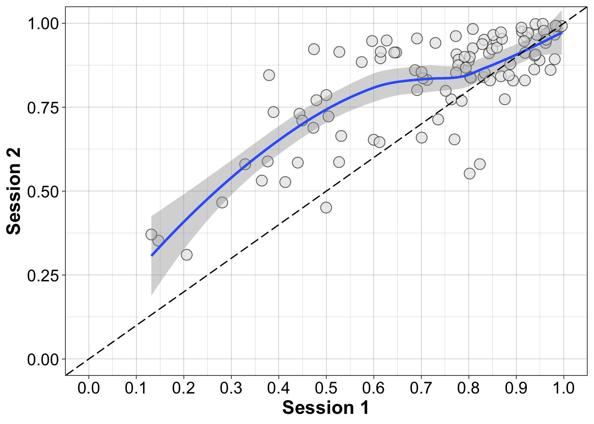
7.7 Compare marginals
Treated (wrongly) as two independent groups, is the typical score in session 2 higher than in session 1?
# percentile bootstrap confidence interval of the difference between
# medians, treating the groups as independent
pb2gen(df1$session2, df1$session1, alpha=.05, nboot=2000, est=median)$est.1
[1] 0.8765588
$est.2
[1] 0.7925541
$est.dif
[1] 0.08400476
$ci
[1] 0.03999068 0.13358857
$p.value
[1] 0.001
$sq.se
[1] 0.000605188
$n1
[1] 100
$n2
[1] 1007.8 Quantify within participant differences
Can we conclude that, within participants, scores are higher in session 2 relative to session 1?
7.8.1 Summary statistics
7.8.2 Bootstrap test
# Compute confidence interval of the median of the paired differences
onesampb(df1$session2 - df1$session1, alpha=.05, nboot=2000, est=median)$ci
[1] 0.04740512 0.10957389
$n
[1] 100
$estimate
[1] 0.07790945
$p.value
[1] 07.8.2.1 Plot bootstrap distribution of median pairwise differences
set.seed(1)
nboot <- 2000
aav <- 0.05 # arbitrary alpha value
diff <- df1$session2 - df1$session1
n <- length(diff)
# bootstrap sampling
boot.diff <- matrix(sample(diff, size=n*nboot, replace=TRUE), nrow=nboot)
# compute medians for each bootstrap sample
boot.diff.md <- apply(boot.diff, 1, median)
# confidence interval
ci <- quantile(boot.diff.md, probs = c(aav/2, 1-aav/2))
# group median difference
diff.md <- median(diff)
ci1 <- round(ci[1], digits=2)
ci2 <- round(ci[2], digits=2)
df <- as_tibble(with(density(boot.diff.md),data.frame(x,y)))
ggplot(df, aes(x = x, y = y)) + theme_gar +
geom_vline(xintercept = diff.md, colour = "grey", size = 1) +
geom_line(linewidth = 2) +
# scale_x_continuous(breaks = seq(-200, 200, 20)) +
# coord_cartesian(xlim = c(-130, 0)) +
labs(x = "Bootstrap median of pairwise differences", y = "Density") +
# confidence interval ----------------------
geom_segment(x = ci[1], xend = ci[2],
y = 0, yend = 0,
lineend = "round", size = 3, colour = "orange") +
annotate(geom = "label", x = ci1, y = 0.1*max(df$y), size = 7,
colour = "white", fill = "orange", fontface = "bold",
label = paste("L = ", round(ci1, digits = 2))) +
annotate(geom = "label", x = ci2, y = 0.1*max(df$y), size = 7,
colour = "white", fill = "orange", fontface = "bold",
label = paste("U = ", round(ci2, digits = 2)))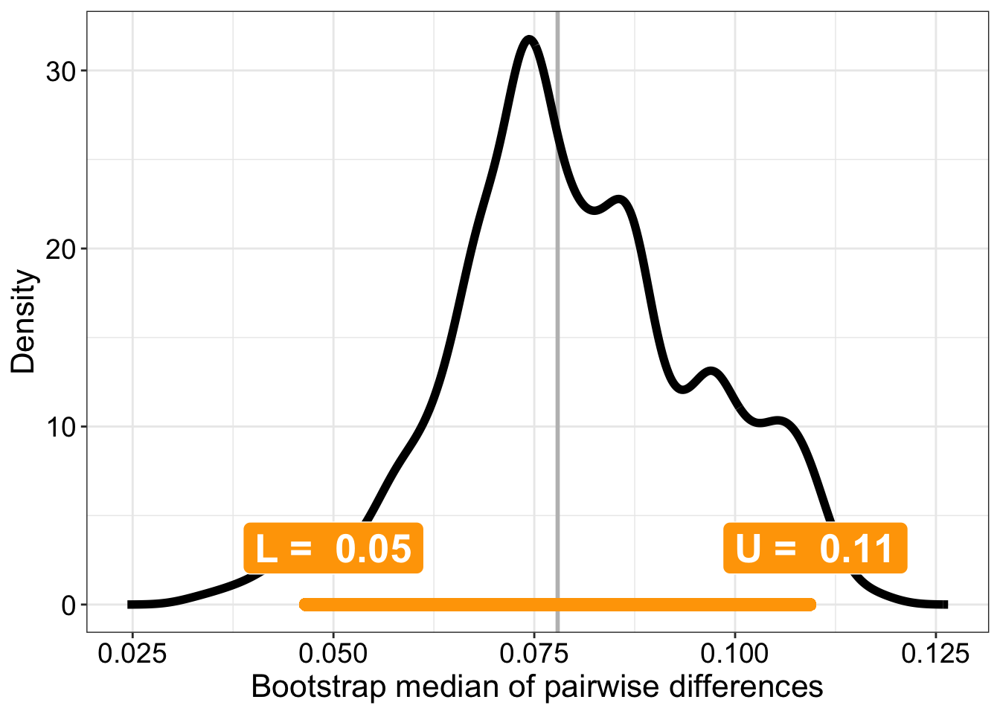
7.8.3 \(P(diff > 0)\)
In what proportion of participants is performance better in session 2?
7.8.4 \(P(diff > 0)\) + confidence interval
Fancy a confidence interval for that interesting and perfectly legitimate quantity? The only thing we need is a function we can plug into onesampb().
7.8.4.1 Define function
Probability that x is larger than zero.
7.8.4.2 Percentile bootstrap
Note how argument est is set to our new quantity defined by function pxlz.
7.9 References
Rousselet, G. A., Pernet, C. R., & Wilcox, R. R. (2017). Beyond differences in means: Robust graphical methods to compare two groups in neuroscience. European Journal of Neuroscience, 46(2), 1738–1748. https://doi.org/10.1111/ejn.13610